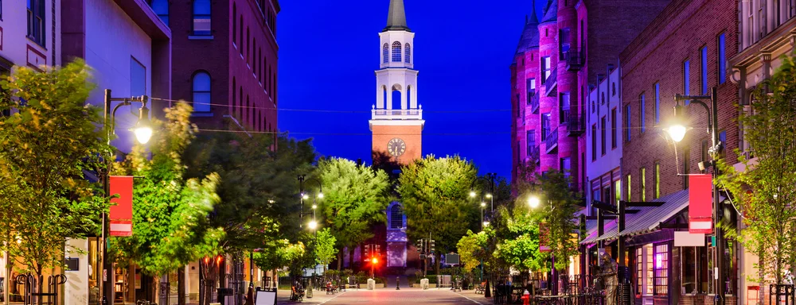

Cannabis Industry Opportunities
Vermont
In 2004, the Vermont General Assembly passed S. 76, an act allowing for the medical use of marijuana. S.247- passed in 2014 - eliminates the cap of 1,000 patients who are allowed to access dispensaries. It also allows dispensaries to deliver medical marijuana to patients.
On January 22, 2018, Governor Phil Scott signed H.B. 511, which legalized the recreational use of marijuana. The law makes it legal for adults 21 years and older to possess up to 1 ounce of marijuana and have 2 mature marijuana plants or 4 immature plants in each dwelling unit.
On January 21, 2019, S.B. 54 was introduced to establish a system to tax and regulate the production and sale of marijuana through licensed recreational marijuana businesses. Adults 21 and older are allowed to possess, cultivate and consume marijuana in Vermont, but retail sales are currently prohibited. SB 54, currently before the legislature, would establish a commercial cannabis system, impose a 10 percent excise tax on sales and shift regulatory responsibilities from the state Department of Public Health to an independent Cannabis Control Board. The legislature is in recess until 2020. If passed, licenses for retailers and marijuana will likely be issued in 2021.
The Department of Public Safety has currently issued 5 medical dispensary registration certificates. Adults 21 and older are allowed to possess, cultivate and consume recreational marijuana in Vermont, but retail sales are currently prohibited.
Currently there is no application available.
The Vermont Marijuana Registry (VMR) is responsible for issuing medical cannabis cards to patients. Qualifying conditions include:
In 2004, the Vermont General Assembly passed S. 76, an act relating to marijuana use for people with severe Illnesses. S.247- passed in 2014 eliminates the cap of 1,000 patients who are currently allowed to access dispensaries and allow dispensaries to deliver marijuana to patients. On January 22, 2018, Governor Phil Scott signed H.B. 511, which legalized the recreational use of marijuana. The law makes it legal for adults 21 years and older to possess up to 1 ounce of marijuana and have two mature marijuana plants or four immature plants in each dwelling unit.
On January 21, 2019, S.B. 54 was introduced to establish a system to tax and regulate the production and sale of marijuana through licensed recreational marijuana businesses. Currently legislature is in recess until 2020. Vermont Department of Taxes and the Legislative Joint Fiscal Office developed a model to estimate the size of a legal marijuana market in Vermont. The estimate of total taxable retail sales in 2016 was projected to be $53,518,097 on the lower end to $83,005,176 on the higher end.
Currently there are no available licenses in Vermont. There are 5 active medical dispensaries in the state of Vermont. Applications for a sixth dispensary will be announced when the number of registered patients reaches 7,000.
Adult-use Is legal in the state of Vermont. Adults 21 years and older to possess up to 1 ounce of marijuana and have 2 mature marijuana plants or 4 immature plants in each dwelling unit. Retail sales are currently prohibited. Medical marijuana is legal in the state of Vermont. There are 5 active medical dispensaries in the state of Vermont. A registered patient may obtain medical marijuana only from their designated dispensary. Hemp and cannabidiol (CBD) products derived from hemp may be legally sold in Vermont.
Call us at (702) 533-4899 or please fill out our contact form!
Book a consultation with one of our experts and let us guide you.
Vermont is projected to retail around $48 million in its first full year of medical sales, about $163 million in the second year, and approximately $387 million in the third year of legal medical cannabis sales. - Akerna
If you are just starting your marijuana business, the best next step is to create a Business Plan to educate your team and prepare for the marijuana business license application process.
If you are ready to apply for a Marijuana Business License in Vermont, please contact us or call our offices to set up an appointment. You can also explore other state opportunities or fill out our Contact Form to discuss strategies such as investment or partnership opportunities.
Our headquarters are located in the San Francisco Bay Area and Las Vegas Nevada. We offer a full suite of custom solutions for your cannabis business including business planning, license application development, and investment opportunities. If you are in need of assistance, please call us during business hours listed below. Thank you.
Operating Hours
Mon - Fri: 8am - 5pm PST
Head Office
2300 West Sahara Avenue Suite 800 Las Vegas, NV 89102

services@greenrushconsulting.com
© 2025 Green Rush Consulting LLC. All Rights Reserved.